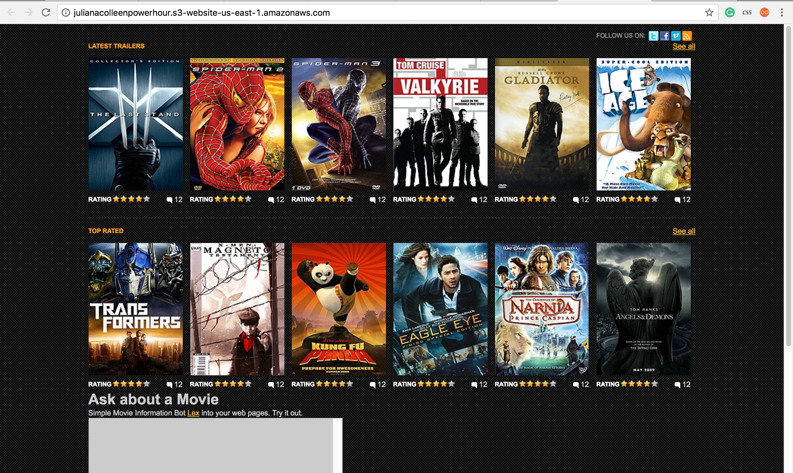

During our first week, we toured the Georgetown campus! The history and prestige of the university was very interesting to hear more about. Although I don't think I have a chance at being accepted at such a prestigous institution, it was still interesting to learn about the traditions and lifestyle of the university.
We traveled by metro to the FCC to hear from a panel of women who work at the FCC. Although all the women who spoke are lawyers, they're all women in technology so they encouraged us to continue in a technological path.
We had the incredible opportunity to tour a new AT&T space, called the AT&T Foundry, as well as participate in a hackathon in which we presented our final products to members of Congress. The Foundry is very innovative; I liked their concept of providing an open and adaptable space, enabled by tech of course, to promote and foster creativity within the company. The Congressional Hackathon was different than expected but was nevertheless a very valuable experience. Quoum, a company known for its online database of governmental data, used by those whp interact or learn with governmental figures, helped my team and I create our project. We were presented with the task of creating word clouds (mine, shown below) foccused n keywords related to women in STEM, or more specifically, the technology field. My keywords, "software" and "engineering" was pulled from Congress members' tweets. The greater the frequency of a word mentioned with these keywords, the greater the size of the word in the word cloud. Conversely, the fewer times a word is mentioned, the smaller it is displayed in the word cloud. We prepared a presentation on the work we did and were supposed to present to Representative Pramila Jayapal (D, WA) but she couldn't make it so we presented to Representative Cathy McMorris Rogers (R, WA).
We visited the Oath office and met up with another Girls Who Code group! The Oath office was very much like how I pictured a technology startup looking like. Amazon Web Services (AWS) gave a very informative and enlightening presentation on how AWS has expanded Amazon as a pioneer in the technology realm. The workshop they hosted gave us the resources to create our own website through AWS. We met some cool people and ate some good food!

* NOTE: Because my Girls Who Code program was at the AT&T office in Washington DC, a large number of our activities ad speakers pertained to law and technology.
We had the opportunity to hear from the Senior Vice President Federal Regulatory, which basically means she's in charge of AT&T's relationship with the federal government, or more specifically, the FCC. It was an honor to have the opportunity to hear from her as she's certainly a very busy woman!
Starting off with an activity to get us thinking about the different aspects of technology and how we view them, the three legal interns at AT&T this summer, split us up into groups to discuss how we could improve apps we use on a regular basis. I really loved this activity because it got us thinking how to make our digital world better, rather than simply focusing on creating something new and groundbreaking.
Alisha Seam & Nadia Morris
Anisa Latif, Jennifer Van Riper, Lacretia Hill, Neeti Tandon
This panel of empowering women covered 4 topics: Attitude + Networking, The Internet of Things, College Scholarships + Financial Aid, & Big Data. Latif (networking) and Hill (money for college) offered a lot of useful and relevant information for me as I'm a rising junior and have to start thinking about the college admissions process and applying for jobs. Van Riper (jobs) and Tandon (big data) talked about specific areas of the IT realm for us to keep in consideration as we go into college and the workforce.